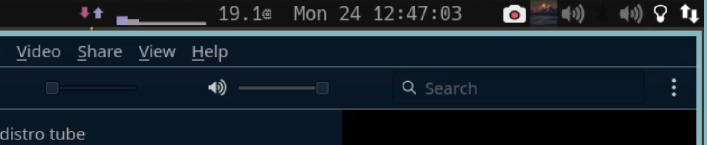
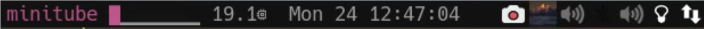

My DWM Status Bar - With a Problem¤
Why¤
dwm's slstatus is a C program which prints some basic system data every second, incl. total CPU usage.
As a python and vim user I (too) often have ONE process consume 100% CPU - e.g. a gone wild python program, or, more often, vim opened within an badly configured environment, where coc runs amok, trying to get together all source code for the file under edit.
The total CPU number shown by slstatus does not really show this, with 8 cores, one loaded one is not really that significant.
So I looked a bit into slstatus and tried to create a per-core indicator.
Measuring Load on Linux¤
This is done via /proc/stat. Here, the kernel reports cumulative(counting up) core usage per second:
~ ❯ cat /proc/stat
cpu 502382 2167 136093 21207687 29533 184796 10164 0 0 0
cpu0 65995 280 14753 2578372 3274 93964 1608 0 0 0
(...)
cpu7 77587 380 15185 2661505 3187 1170 738 0 0 0
- current load you get by subtracting the number seen at t from the one seen a second ago. If this is 100 you have 100% core usage - currently.
- slstatus just looks at the total (the first row, cpu):
~/.config/slstatus ❯ cat components/cpu.c
(...)
const char *
cpu_perc(void)
#if defined(__linux__)
{
static long double a[7];
long double b[7], sum;
int tot = 0;
memcpy(b, a, sizeof(b));
/* cpu user nice system idle iowait irq softirq */
if (pscanf("/proc/stat", "%*s %Lf %Lf %Lf %Lf %Lf %Lf %Lf",
&a[0], &a[1], &a[2], &a[3], &a[4], &a[5], &a[6])
!= 7) {
return NULL;
}
if (b[0] == 0) {
return NULL;
}
//return bprintf("%d", (int)b[0]);
sum = (b[0] + b[1] + b[2] + b[3] + b[4] + b[5] + b[6]) -
(a[0] + a[1] + a[2] + a[3] + a[4] + a[5] + a[6]);
if (sum == 0) {
return NULL;
}
tot = (100 *
((b[0] + b[1] + b[2] + b[5] + b[6]) -
(a[0] + a[1] + a[2] + a[5] + a[6])) / sum);
if (tot > 10) return bprintf("%d\x03⌀\x01", (int)tot);
if (tot > 20) return bprintf("%d\x04⌀\x01", (int)tot);
return bprintf("%d⌀", (int)tot);
}
(...)
// also interesting:
#elif defined(__OpenBSD__)
if (sysctl(mib, 2, &a, &size, NULL, 0) < 0) {
warn("sysctl 'KERN_CPTIME':");
return NULL;
}
if (b[0] == 0) {
return NULL;
}
sum = (a[CP_USER] + a[CP_NICE] + a[CP_SYS] + a[CP_INTR] + a[CP_IDLE]) -
(b[CP_USER] + b[CP_NICE] + b[CP_SYS] + b[CP_INTR] + b[CP_IDLE]);
Creating My Own - in Python¤
Thinking further I thought I do my version in python, for quick prototyping and more data, using psutil.
For starters I had the idea to not simply show the usage (as unicode bars - stolen from Luke Smith), but to
A) Sort by bar height, so that top usage is always at the left (the core used is changing all the time)
B) Show the name of the process consuming 100% right within the status bar - when there is one.
C) Show also network traffic - when there is traffic.
D) Colors
E) More Sensors
For D, colors, there is this patch: dwm-statuscolors-20181008-b69c870.diff - allowing to tag colors from a (small) fixed set, using
indicators like \x01 for normal text, \x03 for warning and so on.
The daemon: status.py¤
Talk is cheap, show me the code
~/inst/dwm ❯ cat status.py
#!/usr/bin/python
"""
Statusbar Daemon, setting status the xsetroot way
started in autostart.sh
Replaces SL status.
Requires: statuscolors (e.g. \x03: important color \x04: warning color)
Hightlights:
- cpu per core
- top process
- arbitray long symbol lists, will pick per percent
Important:
Keep number of slstatus color tags constant in output,
otherwise you get jumping positions
"""
import os, sys, psutil, time, subprocess as sp
import time
# config
Sensors = ['traffic', 'cpu', 'mem', 'battery', 'time']
# Sensors = ['time']
Traffic100 = 1024 # bytes
bars = '▁▂▃▄▅▆▇'
# arr_downs = ' 🢓↓⬇ﰬ🡇'
arr_downs = ' ↓⬇ﰬ🡇'
arr_ups = ' ↑⬆🡅'
# end config
s = []
CPUs = psutil.cpu_count()
ctx = {'proc_stat': [0 for i in range(CPUs)], 'traffic': [0, 0]}
top = 'top -b -1 -n 1 -w 100 | head -n 20'
bar_intv = 100.0 / len(bars)
arr_downs_intv = 100.0 / len(arr_downs)
arr_ups_intv = 100.0 / len(arr_ups)
arrows = [[arr_downs, arr_downs_intv], [arr_ups, arr_ups_intv]]
# delivers the *cummulated* load values - per cpu.
# A difference of 100 within 1 sec means: fully loaded
proc_stat = '/proc/stat'
top = 'top -b -1 -n 1 -w 100 | head -n 20'
"""
os.environ['LINES'] = '12' # top cutting the output then
top - 17:36:55 up 2 days, 19:57, 3 users, load average: 1,71, 1,41, 1,14
Tasks: 410 total, 2 running, 406 sleeping, 0 stopped, 2 zombie
%Cpu0 : 0,0 us, ... %Cpu1 : 0,0 us
%Cpu2 : 0,0 us, ... %Cpu3 :100,0 us
%Cpu4 : 0,0 us, ... %Cpu5 : 0,0 us
%Cpu6 : 0,0 us, ... %Cpu7 : 0,0 us
MiB Mem : 15351,4 total, 2072,7 free, 3360,2 used, 9918,5 buff/cache
MiB Swap: 512,0 total, 492,3 free, 19,7 used. 11039,6 avail Mem
PID USER PR NI VIRT RES SHR S %CPU %MEM TIME+ COMMAND
642053 gk 20 0 14352 8628 5644 R 100,0 0,1 21:14.30 python
630695 gk 20 0 3724352 535904 289652 S 6,7 3,4 12:04.78 firefox
"""
def add_top_cpu_eaters(r, nr):
# nr 1: top,
t = os.popen(top).read()
p = ' '.join(t.split('COMMAND', 1)[1].split('\n', 1 + nr)[nr].split()[11:])
r.insert(0, '\x04%s ' % p[:10].replace(' ', ''))
class sensors:
def cpu():
r = []
with open(proc_stat) as fd:
t = fd.read()
o = ctx['proc_stat']
h = []
for i in range(CPUs):
v, t = t.split('cpu%s ' % i, 1)[1].split('\n', 1)
v = int(v.split(' ', 1)[0])
d = min(v - o[i], 99.9)
o[i] = v
# print(i, d, file=sys.stderr)
h.append(d)
h = list(reversed(sorted(h)))
# show top process:
for i in [0, 1]:
if h[i] > 80:
add_top_cpu_eaters(r, i + 1)
else:
r.insert(0, '\x04') # color tags must be same amount always
col = lambda d: '\x04' if d > 90 else '\x03' if d > 30 else '\x02'
v = lambda d: bars[int(d / bar_intv)]
[r.append('%s%s' % (col(d), v(d))) for d in h]
return ''.join(r)
def time():
t = time.ctime().split()
t.pop(1) # month
t.pop()
return ' '.join(t)
def mem():
return '%s' % psutil.virtual_memory().percent
def traffic():
r = []
o = ctx['traffic']
h = psutil.net_io_counters(pernic=False)
v = [h.bytes_sent, h.bytes_recv]
print('')
for i in range(2):
d = 100 * (min((v[i] - o[i]), Traffic100 - 1) / Traffic100)
# print('%s\t%s' % (v[i] - o[i], d))
o[i] = v[i]
arrs, arr_int = arrows[i]
col = '\x04' if i == 0 else '\x03'
s = arrs[int(d / arr_int)]
r.append('%s%s' % (col, s))
return ''.join(r)
def battery():
B = ''
P = 'ﮤ'
d = psutil.sensors_battery()
d, pp = int(d.percent), d.power_plugged
p = '\x02' + P[0] if pp else '\x04' + P[1]
s = B[int(min(d, 99) / (100 / len(B)))]
if d < 30:
s = '\x04' + s
if d < 60:
s = '\x03' + s
else:
s = '\x02' + s
if d > 90 and pp:
return ''
return s + ' ' + p + ' '
def xsetroot(sl):
if os.system('xsetroot -name "%s"' % sl):
print('exitting status.py')
sys.exit(1)
def terminal(sl):
# don't want to see the '\x0...' in terminal:
os.system('echo -e "%s"' % sl)
def main():
out = terminal if '-s' in sys.argv else xsetroot
while True:
s.clear()
for w in Sensors:
k = getattr(sensors, w)()
s.append('%s\x01 ' % k)
# space to overwrite/delete remaining old process names:
sl = ' \x02' + ''.join(s)
out(sl)
time.sleep(1)
if __name__ == '__main__':
main()
top for non interactive system info?!
Yes, in add_top_cpu_eater I do use top to get the most CPU eating procs.
But: Since I want to show the top 2 core loading processes
anwyay, when we are loaded - and finding those using psutils, iterating over all processes, would have been way more expensive than top.
top is pretty efficient and the output format is constant. Many people seem to (mis)use it for gathering infos the cheap way, they even added the -b (batch) mode for this.
The other sensors should be pretty easy to understand.
Patching dwm¤
Worth noting here that the dwm statuscolors and systray patch collide. Here is the resolution to have both working:
void
drawbar(Monitor *m)
{
int x, w, tw = 0, stw = 0;
int boxs = drw->fonts->h / 9;
int boxw = drw->fonts->h / 6 + 2;
unsigned int i, occ = 0, urg = 0;
char *ts = stext;
char *tp = stext;
int tx = 0;
char ctmp;
Client *c;
if(showsystray && m == systraytomon(m))
stw = getsystraywidth();
/* draw status first so it can be overdrawn by tags later */
if (m == selmon || 1) { /* status is only drawn on selected monitor - not anymore, have statusallmons in */
drw_setscheme(drw, scheme[SchemeNorm]);
tw = TEXTW(stext) - lrpad / 2 + 2; /* 2px right padding */
/*tw = TEXTW(stext); /*- lrpad / 2 + 2; * 2px right padding */
while (1) {
if ((unsigned int)*ts > LENGTH(colors)) { ts++; continue ; }
ctmp = *ts;
//fprintf(stderr, "drawbar %d %d.\n", ctmp, tx);
*ts = '\0';
// drw_text(Drw *drw, int x, int y, unsigned int w, unsigned int h, unsigned int lpad, const char *text, int invert)
// the 120 shifts it to the right, there would be a big gap otherwise, not sure why, potentially to do with statuscolors plus systray patch
// and amount of output in status.py
//
drw_text(drw, m->ww - tw - stw + tx + 120, 0, tw - tx, bh, 0, tp, 0); // <--- this is the right way
/*drw_text(drw, m->ww - tw - stw + tx, 0, tw - tx, bh, 0, tp, 0);*/
tx += TEXTW(tp) -lrpad;
if (ctmp == '\0') { break; }
drw_setscheme(drw, scheme[(unsigned int)(ctmp-1)]);
*ts = ctmp;
tp = ++ts;
}
}
resizebarwin(m);
(...)
Note that I also have dwm-statusallmons-6.2 in (the ||1, bypassing selmon).
Final Result¤
Here it is in action:
  With power cable removed:
Here a live recording.
The Problem¤
I liked it a lot, looked nice and clean but fully under control - but it had a downside:
Staring at top output I noticed a new candiate in the list, rarely seen ever before: dwm itself :-(
PID USER PR NI VIRT RES SHR S %CPU %MEM TIME+ COMMAND
145769 gk 20 0 31376 16276 12856 S 11,6 0,1 2:16.16 dwm
Not always but e.g. when tag switching, i.e. when redrawing the status bar. status.py itself was < 1%, always.
Never saw that, dwm is usually never ever >1%. Bad.
This defies the main reason of using superlightweight dwm in the first place.
When early returning in drawbar, the cpu usage stays low.
First I thought about a bug in my drawbar patch. But analyzing it I found no problem, e.g. an infinite loop - the function was only called once a second and the while loop cleanly exits at the end of the status text.
I do think currently that it's a really the drw_setscheme, which is that expensive, and it is called at every different color used in the bar.
There must be a better way...